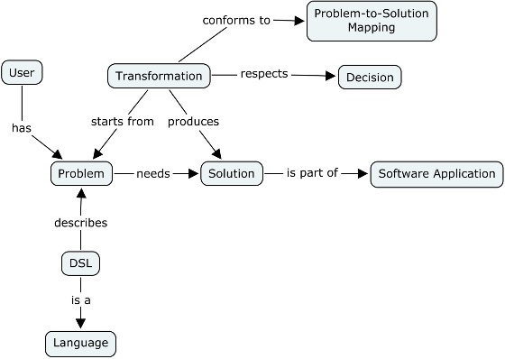
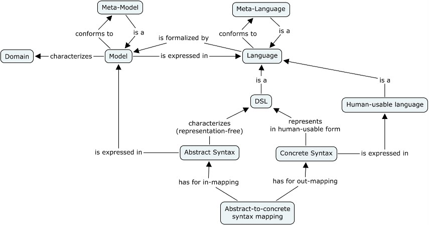

DSL (Domain-Specific Language) |
A DSL (Domain-Specific Language) is a specialized and problem-oriented language [1].
A DSL is a specialized and problem-oriented language [1]. Contrarily to a General Purpose Language (GPL) (e.g., UML, Java or C#), a DSL serves to accurately describe a domain of knowledge. The interest to combine a DSL and a transformation function is to raise the abstraction level of software. A DSL user concentrates her/his efforts on domain description while complexity, design and implementation decisions and details are hidden [2]. The result of the transformation, the solution, is a part of a software application that is integrated later in the development process. The stake with DSLs is to improve productivity and software quality [2].

Figure 1. DSL Global view
A DSL is a language formalized by a model. A DSL description, given by a user, is a model instance. An abstract syntax corresponds to the DSL model and is independent of any representation (e.g., textual, graphical representation). On the contrary, a concrete syntax is the abstract syntax represented in a human-usable language (e.g., textual, graphical, tabular). As a consequence, a DSL viewpoint (where DSL descriptions are located) contains for every DSL description i) at least a model that conforms to the abstract syntax of the DSL, ii) different representations of the same DSL description.

Figure 2. DSL structure